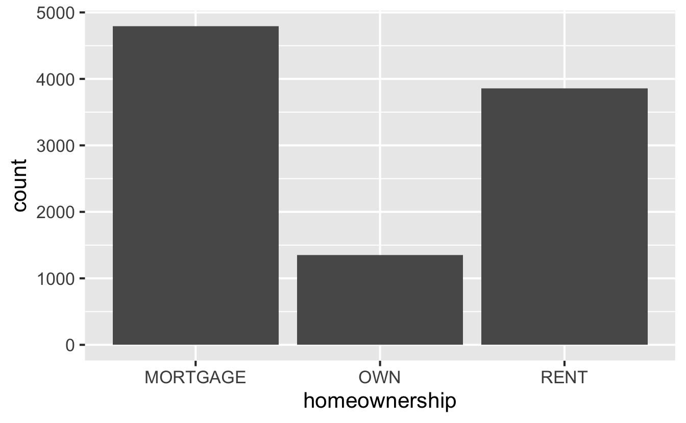
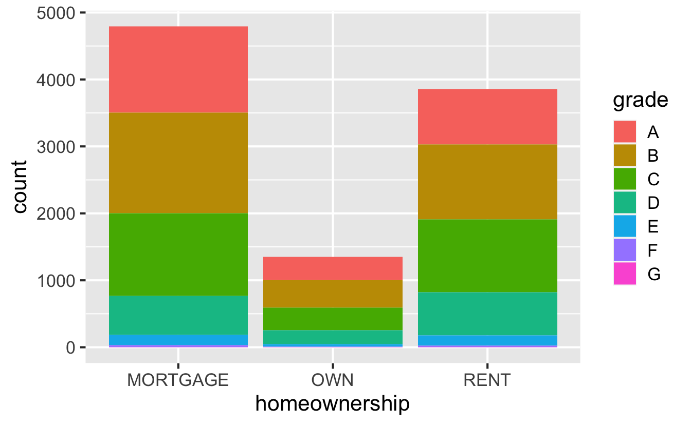

Rows: 10,000
Columns: 55
$ emp_title <chr> "global config en…
$ emp_length <dbl> 3, 10, 3, 1, 10, …
$ state <fct> NJ, HI, WI, PA, C…
$ homeownership <fct> MORTGAGE, RENT, R…
$ annual_income <dbl> 90000, 40000, 400…
$ verified_income <fct> Verified, Not Ver…
$ debt_to_income <dbl> 18.01, 5.04, 21.1…
$ annual_income_joint <dbl> NA, NA, NA, NA, 5…
$ verification_income_joint <fct> , , , , Verified,…
$ debt_to_income_joint <dbl> NA, NA, NA, NA, 3…
$ delinq_2y <int> 0, 0, 0, 0, 0, 1,…
$ months_since_last_delinq <int> 38, NA, 28, NA, N…
$ earliest_credit_line <dbl> 2001, 1996, 2006,…
$ inquiries_last_12m <int> 6, 1, 4, 0, 7, 6,…
$ total_credit_lines <int> 28, 30, 31, 4, 22…
$ open_credit_lines <int> 10, 14, 10, 4, 16…
$ total_credit_limit <int> 70795, 28800, 241…
$ total_credit_utilized <int> 38767, 4321, 1600…
$ num_collections_last_12m <int> 0, 0, 0, 0, 0, 0,…
$ num_historical_failed_to_pay <int> 0, 1, 0, 1, 0, 0,…
$ months_since_90d_late <int> 38, NA, 28, NA, N…
$ current_accounts_delinq <int> 0, 0, 0, 0, 0, 0,…
$ total_collection_amount_ever <int> 1250, 0, 432, 0, …
$ current_installment_accounts <int> 2, 0, 1, 1, 1, 0,…
$ accounts_opened_24m <int> 5, 11, 13, 1, 6, …
$ months_since_last_credit_inquiry <int> 5, 8, 7, 15, 4, 5…
$ num_satisfactory_accounts <int> 10, 14, 10, 4, 16…
$ num_accounts_120d_past_due <int> 0, 0, 0, 0, 0, 0,…
$ num_accounts_30d_past_due <int> 0, 0, 0, 0, 0, 0,…
$ num_active_debit_accounts <int> 2, 3, 3, 2, 10, 1…
$ total_debit_limit <int> 11100, 16500, 430…
$ num_total_cc_accounts <int> 14, 24, 14, 3, 20…
$ num_open_cc_accounts <int> 8, 14, 8, 3, 15, …
$ num_cc_carrying_balance <int> 6, 4, 6, 2, 13, 5…
$ num_mort_accounts <int> 1, 0, 0, 0, 0, 3,…
$ account_never_delinq_percent <dbl> 92.9, 100.0, 93.5…
$ tax_liens <int> 0, 0, 0, 1, 0, 0,…
$ public_record_bankrupt <int> 0, 1, 0, 0, 0, 0,…
$ loan_purpose <fct> moving, debt_cons…
$ application_type <fct> individual, indiv…
$ loan_amount <int> 28000, 5000, 2000…
$ term <dbl> 60, 36, 36, 36, 3…
$ interest_rate <dbl> 14.07, 12.61, 17.…
$ installment <dbl> 652.53, 167.54, 7…
$ grade <fct> C, C, D, A, C, A,…
$ sub_grade <fct> C3, C1, D1, A3, C…
$ issue_month <fct> Mar-2018, Feb-201…
$ loan_status <fct> Current, Current,…
$ initial_listing_status <fct> whole, whole, fra…
$ disbursement_method <fct> Cash, Cash, Cash,…
$ balance <dbl> 27015.86, 4651.37…
$ paid_total <dbl> 1999.330, 499.120…
$ paid_principal <dbl> 984.14, 348.63, 1…
$ paid_interest <dbl> 1015.19, 150.49, …
$ paid_late_fees <dbl> 0, 0, 0, 0, 0, 0,…Grammar of data transformation
Data visualization and transformation
Data Science with R
Terminology
Number of variables involved
- Univariate data analysis - distribution of single variable
- Bivariate data analysis - relationship between two variables
- Multivariate data analysis - relationship between many variables at once, usually focusing on the relationship between two while conditioning for others
Types of variables
- Numerical variables can be classified as continuous or discrete based on whether or not the variable can take on an infinite number of values or only non-negative whole numbers, respectively.
- If the variable is categorical, we can determine if it is ordinal based on whether or not the levels have a natural ordering.
Data
Data: Lending Club
- Thousands of loans made through the Lending Club, which is a platform that allows individuals to lend to other individuals

Not all loans are created equal – ease of getting a loan depends on (apparent) ability to pay back the loan
Data includes loans made, these are not loan applications
Take a peek at data
Selected variables
loans <- loans_full_schema |>
select(
loan_amount, interest_rate, term, grade,
state, annual_income, homeownership, debt_to_income
)
glimpse(loans)Rows: 10,000
Columns: 8
$ loan_amount <int> 28000, 5000, 2000, 21600, 23000, 50…
$ interest_rate <dbl> 14.07, 12.61, 17.09, 6.72, 14.07, 6…
$ term <dbl> 60, 36, 36, 36, 36, 36, 60, 60, 36,…
$ grade <fct> C, C, D, A, C, A, C, B, C, A, C, B,…
$ state <fct> NJ, HI, WI, PA, CA, KY, MI, AZ, NV,…
$ annual_income <dbl> 90000, 40000, 40000, 30000, 35000, …
$ homeownership <fct> MORTGAGE, RENT, RENT, RENT, RENT, O…
$ debt_to_income <dbl> 18.01, 5.04, 21.15, 10.16, 57.96, 6…Selected variables
| variable | description |
|---|---|
loan_amount |
Amount of the loan received, in US dollars |
interest_rate |
Interest rate on the loan, in an annual percentage |
term |
The length of the loan, which is always set as a whole number of months |
grade |
Loan grade, which takes a values A through G and represents the quality of the loan and its likelihood of being repaid |
state |
US state where the borrower resides |
annual_income |
Borrower’s annual income, including any second income, in US dollars |
homeownership |
Indicates whether the person owns, owns but has a mortgage, or rents |
debt_to_income |
Debt-to-income ratio |
Variable types
| variable | type |
|---|---|
loan_amount |
numerical, continuous |
interest_rate |
numerical, continuous |
term |
numerical, discrete |
grade |
categorical, ordinal |
state |
categorical, not ordinal |
annual_income |
numerical, continuous |
homeownership |
categorical, not ordinal |
debt_to_income |
numerical, continuous |
class: middle
Visualizing categorical data
Bar plot
Segmented bar plot
Segmented bar plot
Warning: The following aesthetics were dropped during statistical
transformation: fill
ℹ This can happen when ggplot fails to infer the correct
grouping structure in the data.
ℹ Did you forget to specify a `group` aesthetic or to
convert a numerical variable into a factor?
Numerical to categorical
Segmented bar plot - proportions
Frequencies vs. proportions
Which bar plot is a more useful representation for visualizing the relationship between homeownership and term?
Customizing bar plots
loans |>
mutate(term = as.factor(term)) |>
ggplot(aes(y = homeownership, fill = term)) +
geom_bar(position = "fill") +
labs(
x = "Proportion", y = "Homeownership", fill = "Term",
title = "Terms of Lending Club loans",
subtitle = "and homeownership of borrowers"
) +
scale_fill_manual(values = c("lightblue", "darkgreen"))Summarizing categorical data
Frequency table
Relative frequency table
Frequency table with multiple variables
Relative frequency table with multiple variables
# A tibble: 6 × 4
# Groups: homeownership [3]
homeownership term n proportion
<fct> <dbl> <int> <dbl>
1 MORTGAGE 36 3071 0.641
2 MORTGAGE 60 1718 0.359
3 OWN 36 998 0.738
4 OWN 60 355 0.262
5 RENT 36 2901 0.752
6 RENT 60 957 0.248